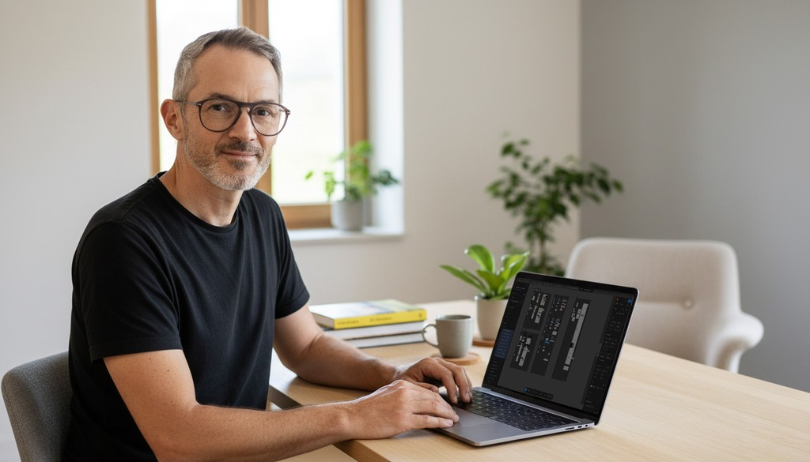

Prêt à discuter de votre nouveau projet ?
Je serai ravis de vous rencontrer pour en discuter.

Avec plus de 20 ans d’expérience dans le web et certifié d’un Diplôme Fédéral de Web Project Manager, j'accompagne les PME, indépendants et associations à développer leur présence en ligne.
Vous souhaiter discuter de votre projet ?
N'hésitez pas à me contacter!
Didier Grand
078 653 58 90 dg@digitalgarage.ch